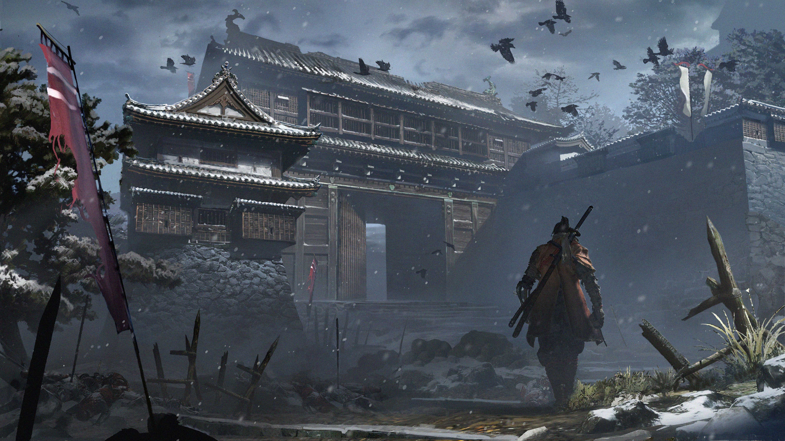
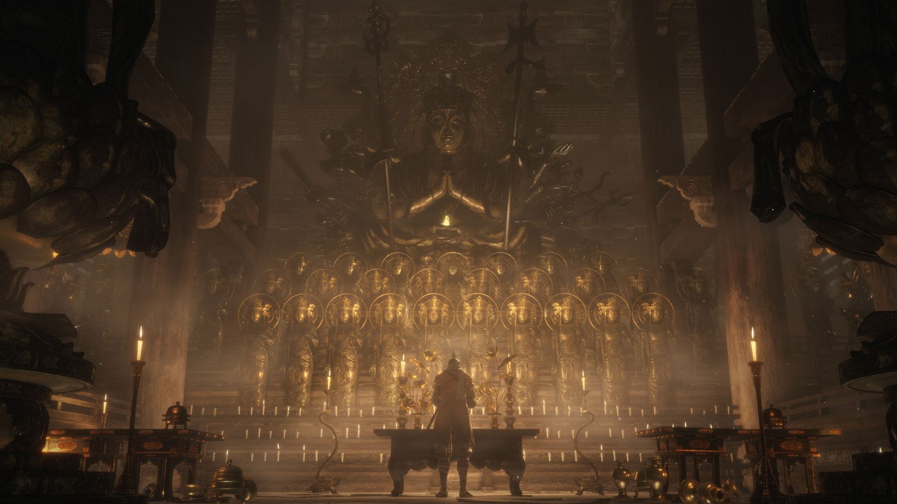
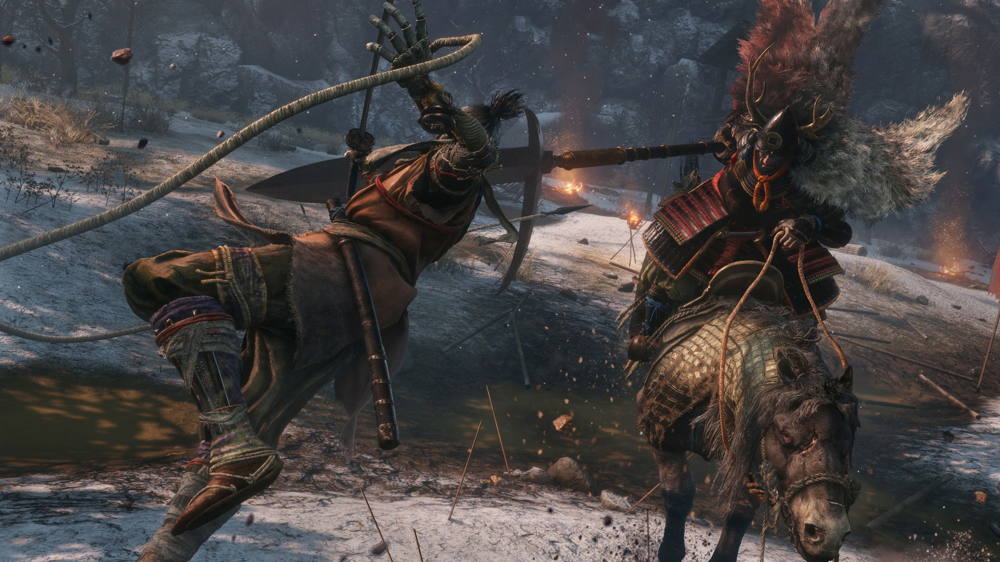

INTRODUCCIÓN A SEKIRO: SHADOWS DIE TWICE
Sekiro: Shadows Die Twice es un videojuego de acción y aventura desarrollado por FromSoftware y publicado por Activision. Fue lanzado en marzo de 2019 para PlayStation 4, Xbox One y Microsoft Windows. El juego se desarrolla en un Japón ficticio durante el período Sengoku y sigue la historia de un shinobi llamado Sekiro mientras busca rescatar a su joven maestro secuestrado y vengar la caída de su clan [1][2].

INFORMACIÓN GENERAL
El juego combina exploración, sigilo y enfrentamientos con espada en escenarios inspirados en el Japón del período Sengoku. El jugador controla a Sekiro, un shinobi que debe abrirse camino entre enemigos humanos y criaturas sobrenaturales [2][3].
- Género: acción y aventura.
- Desarrollador: FromSoftware.
- Editor: Activision.
- Lanzamiento: marzo de 2019.
- Plataformas: PlayStation 4, Xbox One y Microsoft Windows.
- Ambientación: Japón ficticio durante el período Sengoku [1][2].
DESARROLLO Y RECONOCIMIENTO

Sekiro: Shadows Die Twice fue desarrollado por FromSoftware, estudio conocido por crear videojuegos de acción que exigen atención, precisión y aprendizaje durante los combates. En esta ocasión, el estudio construyó una experiencia centrada en un protagonista definido y en un sistema de lucha basado en el manejo de la katana, la postura y el momento adecuado para atacar [3].
La ambientación, el diseño de los escenarios y la dificultad de los enfrentamientos contribuyen a que el jugador tenga que observar el comportamiento de sus adversarios y adaptar su estrategia [3].
JUGABILIDAD
Pese a ser un videojuego de acción y aventura, Sekiro: Shadows Die Twice no posee algunas características habituales de este género, como la creación de personajes, las clases, las mejoras del equipo o los elementos multijugador. En su lugar, el combate gira alrededor de utilizar una katana para atacar la postura del enemigo, lo que finalmente puede abrir una oportunidad para ejecutar un golpe mortal [3].
Asimismo, el videojuego añade elementos de sigilo, lo que permite a los jugadores eliminar a los enemigos de inmediato si consiguen acercarse sin ser detectados. Además, el personaje puede utilizar herramientas de combate y exploración, como un gancho para escalar y una antorcha. Si el usuario muere, puede recurrir a la mecánica de resurrección bajo ciertas condiciones para volver a la vida y continuar el combate [3].

HISTORIA DEL VIDEOJUEGO
La historia nos cuenta cómo un shinobi, fiel siervo de su amo, tratará de seguir con su juramento. En su viaje se enfrentará a criaturas mortales y sobrenaturales. Su protagonista es un shinobi que fue dado por muerto después de que su señor fuera secuestrado y su brazo cercenado por un líder samurái del clan Ashina [2][3].
Este shinobi despierta y descubre que su brazo ha sido reemplazado por una prótesis por un misterioso escultor, quien lo llama Sekiro, el «lobo manco». Armado con una katana y la prótesis, tiene como objetivo rescatar a su señor y vengarse [2][3].